Inferring novel protein-protein interactions using neural networks
About
Lay Summary
Artificial neural networks are a type of machine learning technique that can enable computers to learn complex patterns and relationships from data. This technique has been successfully employed in the fields of speech recognition, natural language understanding and computer vision. One prominent example of their application are personal assistants like Apple Siri.
In this project we have applied an artificial neural network to a biological problem: predicting novel protein-protein interactions (PPIs) in the human body by integrating a diverse range of input data sources. PPIsProtein-Protein Interactions
form the basis of many biological processes such as transport across membranes, cell signalling and the immune response. Discovering novel interactions can therefore help us find new drug targets and therapies, but can also improve our understanding of protein function and the basis of their interaction.
We combined three separate data sources to train the neural network. Firstly, the coordinates of each protein after embedding them in a multidimensional space (interacting proteins being placed closer together). Secondly, information about the known domains of each protein. Lastly, the gene ontology annotation for each protein.
When artificially removing interactions from the network, our model was able to recover 28 % of them with 13 % of all predicted interactions being correct. This result demonstrates the potential of applying novel machine learning techniques to biological problems.
Abstract
Current biochemical high-throughput methods for detecting novel protein-protein interactions are prone to significant Type I and Type II errors. Computational tools with the ability to produce high-quality predictions have hence been investigated for several years.
In this work, we present a feed-forward artificial neural network for the prediction of novel protein-protein interactions. We combine available interaction data, Gene Ontology annotations and protein domain data as inputs to our model. The nature of our model provides fully automated data integration without requiring manual weighting of the different input data sources.
We were able to reconstruct artificially removed edges from the human interactome with a Matthews correlation coefficient of 0.19 and F1 score of 0.17. Considering the complexity of the problem, this result highlights the potential of combining supervised and unsupervised machine learning approaches to solve biological problems using a diverse range of input data types.
The supplementary information for this project is available here.
Tips for using this website
Any section window such as this one can be closed in three ways in order to return to the main menu. Firstly, by clicking the grey X at the top of the section window. Secondly, by pressing the 'Escape' button on the keyboard. Thirdly, by clicking outside the section window on the blurred background area.
For more information and defitions of certain wordsAdditional Information. and abbreviationsAdditional Information., just hover over them to display a tooltip.
Proteins represent one of the key components of living organisms. They play a vital role in numerous processes including metabolism, muscle contraction and stimulus response. While some tasks can be fulfilled by individual proteins, others can only be mastered through the concerted action of multiple ones. Such pathways involving protein complexes have been found to be particularly prevalent in signal transduction and the immune response. (Herce et al., 2013)
Studying protein-protein interactions (PPIs) and the resulting interaction networks has consequently been a key area of interest in the research community. While a better understanding of PPIsProtein-Protein Interactions
can help us explain the underlying mechanisms of protein function, it can also highlight avenues towards novel drug and therapy design through an improved insight into disease progression. (Skrabanek et al., 2008)
High-throughput techniques such as yeast two-hybrid (Y2H) screens (Fields & Song, 1989) and affinity purification coupled to mass spectrometry (Rigaut et al., 1999) have long been the method of choice for detecting novel PPIs. The main drawback besides the high costs associated with these techniques, is their low specificity: both approaches are prone to producing a large number of false positives and hence noisy data. (Shoemaker & Panchenko, 2007)
To tackle these issues, computational methods have received significant interest over the previous years in order to obtain high-quality data in a high-throughput fashion. Approaches ranged from text mining methods to machine learning based prediction algorithms using protein sequence. (Keskin, Tuncbag & Gursoy, 2016)
Artificial Neural Networks
Artificial neural networks (ANNsArtificial Neural Networks) are a class of machine learning algorithms which imitate the human brain’s structure and learning. Instead of applying hard-coded rules to solving a given problem, a neural network is able to automatically learn complex features from its input data. (Angermueller et al., 2016) In its most basic form, known as a Multilayer Perceptron (MLP), a neural network consists of an input layer, a hidden layer and an output layer (figure 1). Each layer is in turn comprised of multiple nodes (‘neurons’) which represent a linear transformation of the output of the previous layer (y = wx + b), followed by a non-linear transformation such as y = max(0, x) (the activation function). In an MLP, all nodes are fully connected. This means that each node receives inputs from all nodes in the previous layer, and feeds its outputs to all nodes in the next layer. (Rosenblatt, 1961)
One example of unsupervised learningNeural networks can be trained both in a supervised and unsupervised fashion. In the first case, the networks is presented with the correct label (given a classification problem) alongside the corresponding input data during training. Based on the desired output, the network is then able to correct the weights of each node through a process known as backpropagation. This is an iterative process that is repeated many times during network training and can be understood as a convex optimisation problem with the loss function (for example the likelihood function) as its objective function. (Rumelhart, 1985) are a class of ANNsArtificial Neural Networks referred to as autoencoders (Bengio, 2009) (figure XX). Here, the network is trained to exactly reproduce its inputs. This could easily be achieved with n = N nodes representing the identity function (where N is the dimensionality of the input data and n the number of nodes). In an autoencoder however, a hidden layer with n < N nodes is introduced, which forces the network to reduce the dimensions of the data to n and from that restore the input. This way, the network is able to automatically learn the important features in the data.

Figure 1: Multi layer perceptron (MLP) schematic with three input nodes (top), five hidden nodes (one layer - middle) and one output node (bottom).

Figure 2: Autoencoder schematic. This autoencoder is designed to reduce five input dimensions to two dimensions.
Applications
Neural networks have been applied very successfully to problems from the areas of natural language understanding as well as speech and image recognition. (LeCun, Bengio & Hinton, 2015) In the realm of computational biology, neural networks have found applications in regulatory genomics as well as processing of cellular (Angermueller et al., 2016) and brain imaging data (Dorkenwald et al., 2017). Neural Networks have also recently been applied to the PPIProtein-Protein Interaction
prediction problem by Sun et al. (2017) using protein sequence as input data. Despite the authors reporting detailed metrics and high accuracy on training data, the actual model performance remains unclear as only accuracy is reported for any test-set performance despite test-sets partly being subject to high class imbalance.
Outlook
Previous PPIProtein-Protein Interaction
prediction algorithms have mostly relied of a single type of input data such as sequence information. In this study, we aim to construct a feed-forward ANNArtificial Neural Network algorithm, capable of flexibly integrating several types of input data in order to predict novel PPIProtein-Protein Interaction
. The algorithm’s test-set performance will be validated with metrics appropriate for classification tasks on highly imbalanced datasets such as the Matthews correlation coefficient and the F1 score (see definitions in the technical appendix).
Data Preprocessing
Pipeline Overview

Figure 3: Project pipeline overview.
Data Sources
For this project, three main sources of data were used (figure 3). Firstly, human PPIProtein-Protein Interaction
data from the Biogrid database, secondly Gene Ontology data for the relevant proteins as well as, thirdly, protein domain data. For further information on the studied datasets as well as the data cleaning procedure, please consult the Methods section.
Multidimensional Scaling of protein interaction data
We used Multidimensional Scaling (MDS)MDS is a common technique to embed N nodes of a network in an n-dimensional space where N > n. The euclidean distance between different embedded nodes hereby approximately corresponds to the shortest path-length between the two corresponding nodes in the original network (figure 4). to embed the Biogrid PPI network in a four-dimensional space.
With four embedding dimensions we chose a higher dimensionality than suggested in the original publication by Kuchaiev et al. (2009) to account for the larger PPIProtein-Protein Interaction
network considered for our study. Higher dimensional embedding data could not be obtained due to the computational and time restrictions on this project.
The resulting coordinate matrix of the shape 16,109 x 4 (number of proteins x number of embedding dimensions) was used as the first input to the neural network.
Interactive embedding explorer
The figure below shows the two-dimensional embedding of all 16,109 human proteins in the Biogrid Database. Hovering the mouse over the embedding graphics will reveal an interactive application for exploring the embedding of a subsample of 1,000 proteins.
Brushing over an area while holding down the left mouse button will zoom into the specified area. Double click to zoom out. Information about each protein will be displayed upon hovering the mouse over it. Doubleclick any protein for detailed information from the NCBI website.
Figure 4: Two-dimensional MDSMultidimensional scaling. A common dimensionality reduction technique for network data. embedding of human protein data.
Protein domain data
Due to the large number of features (dimensions) in the protein domain data, we had to reduce the size of this input to a dimensionality practical for an input to an ANNArtificial Neural Network. To achieve this, we employed a class of neural network, known as an autoencoder (see Background). As an unsupervised machine learning method, the autoencoder is able to automatically detect complex relationships as well as key features in the data. Using the autoencoder, we were able to reduce the dimensions of the domain data from 11,664 to 512 while maintaining high reconstruction performance for the hold-out input dataset (tables 1 and 2).
optimised hyperparameters of autoencoder (protein domains) (Table 1)
Num. of Hidden Layers
Num. of Nodes per Hid. Layer
Num. of Epochs Training
Activation Function (hidden layers)
Optimiser
Learning Rate
Batch Size
Regularisation Strength
Dropout Rate
1
512
500
Tanh
Adam
0.001
64
0.0
0.0
Performance of autoencoder on protein domain hold-out data (Table 2)
Accuracy (proportion of proteins with perfectly restored domain labels)
F1 Score
Precision
Recall
Area under PR Curve
Area under ROC Curve
0.5189
0.8867
0.9757
0.8125
0.8363
0.8833
Gene Ontology data
The Gene Ontology (GO) represents a controlled vocabulary to describe gene and gene products such as proteins. It consists of tree parts, namely cellular component (location in the cell), molecular function (main chemical reactions carried out by the protein) and the biological process that the protein is involved in.
As the GO data format was very much resembling the format of the protein domain data, we took the same autoencoder approach to reduce its dimensionality. As there was a near perfect overlap between the proteins that had molecular function GO annotations and the ones with biological process annotations, we concatenated the two arrays to give a combined input for the autoencoder.
We were able reduce the dimensions from 10,733 (8,028 biological process labels + 2,705 molecular function labels) to 512 while maintaining high reconstruction performance for the hold-out input dataset (tables 3 and 4).
optimised hyperparameters of autoencoder (GO annotations) (Table 3)
Num. of Hidden Layers
Num. of Nodes per Hid. Layer
Num. of Epochs Training
Activation Function (hidden layers)
Optimiser
Learning Rate
Batch Size
Regularisation Strength
Dropout Rate
3
4096, 1024, 512
500
Tanh
Adam
0.001
64
0.0
0.0
Performance of autoencoder on GO annotation hold-out data (Table 4)
Accuracy (proportion of proteins with perfectly restored domain labels)
F1 Score
Precision
Recall
Area under PR Curve
Area under ROC Curve
0.8107
0.4501
0.6886
0.3343
0.3850
0.8762
Model Tuning
Imbalanced datasets
Following the cleaning of the Biogrid data, a total of 16,109 proteins with 219,216 interactions (0.2 % positive samples) remained. Given the imbalanced nature of this data, accuracy was not a satisfactory performance measure for our predictive models. The reason for this is that for a dataset containing mostly negative classes, an algorithm predicting every interaction as negative would be able to achieve a high accuracy without being of any practical use. We chose the Matthews correlation coefficient as the most suitable performance measure, but also relied on further statistics such as the F1 score and the area under the ROC Curve.
Training, Validation and Testing Data
The hyperparameters of a model are the ‘tuning knobs’ for optimising the performance of a given ANNArtificial Neural Network. Common hyperparameters are the regularisation strength, learning rate, network structure and in our case also the type of model input.
In order to be able to asses the ‘true’ performance of our model, we assume that any part of the input data which the model has not been trained on is a good representation of ‘unseen’ data to which the model might be applied in the future. For this reason a proportion of the input data is kept on the side throughout the whole training and optimisation process in order to serve as a measure of the model performance once the model has been trained and optimised. This is referred to as the test set. It is important to note here, that any model training or optimisation of hyperparameters cannot involve the test set as this would expose our model to overfitting: instead of learning the general trends and structure in the data (which would also be present in any new data), the model would start learning the unimportant features (noise) present only in the training data. Any overfitting negatively affects the true performance of the model and is therefore to be avoided.
In order to still be able to tune the hyperparameters of the model, a further hold-out set besides the test set is required. We refer to this as the validation set. We constructed a training, validation and test set with equal distributions of positive and negative samples and a split of 0.8 : 0.1 : 0.1. Details on how we constructed and split the datasets can be found in the technical appendix.
Using an embedding layer
To overcome memory limitations stemming from the high dimensionality and large sample number of our input data, we combined the dimensionality reduction by autoencoder with the embedding layer feature provided by Keras. This layer is often used in natural understanding problems where large word embedding lists are a common occurrence. The embedding layer allows to construct network inputs at training time based on a list of lookup-table indices provided.
In our study, we used the coordinates, domains and go term tables as the lookup tables for the three inputs respectively, with the same list of indices provided to each input. This reduced the memory requirement of the input data to a total of 1.5 GB from between 1 TB and 22 TB otherwise. Details on the memory requirements can be found in the technical appendix.
General network structure
Using the embedding layer discussed in the previous section, we were able to construct several feed-forward ANNArtificial Neural Network architectures. Depending on the number of inputs fed into the network, we settled on two general network architectures. Both structures have a set of fully connected hidden layers, directly following each model input (coordinates / domains / GO annotations).
In the case of more than one input, the outputs of each set of hidden layers are concatenated and fed into a further set of layers of the same properties as the previous sets. The output of the final set is then fed into the single output neuron with a sigmoid activation function (figure 5). Any network output smaller than 0.5 was interpreted as a negative prediction (no interaction present between the two proteins in question) while an output of 0.5 or larger was interpreted as a positive prediction (interaction present). In the case of a single input, the outputs of the first set of hidden layers were fed directly into the output neuron (figure 6).
A detailed outline of the network structure as well the underlying mathematical functions can be found in the technical appendix.

Figure 5: Schematic of neural network architecture with multiple inputs.

Figure 6: Schematic of neural network architecture with a single input.
Hyperparameter tuning
A key aspect of developing a good predictive model is the hyperparameter tuning. Given the computational cost of training our models (7 – 20 hours per model) and the large number of hyperparameters, an exhaustive search of all possible parameter combinations was not feasible. We therefore started by identifying the most important hyperparameters in a greedy-type manner (varying one parameter at a time and continuing with the one that results the better validation performance). The most interesting hyperparameters and their impact on model performance can be explored in the interactive tool below.
Beyond the options available in the interactive tool, we explored further parameter combinations, leading to the following conclusions:
The stochastic gradient descent optimiser with Nesterov momentum (Nesterov, 1983) and default learning rate of 0.01 performed consistently better than the Adam optimiser (Kingma & Ba, 2014) with its default learning rate 0.001.
Varying the learning rate from the default values or introducing a learning rate decay schedule did not increase model performance.
Oversampling the minority class (positive interactions) using SMOTESynthetic Minority Over-sampling Technique. A common technique used to balance an imbalance dataset. (Chawla et al., 2002) as well as simple oversampling by duplication lead to significantly poorer results than weighting the loss on the majority class at 0.08 : 1.0 during network training.
Adding auxiliary outputs prior to the concatenation layer did not increase model performance.
Results & Discussion
Comparing different model inputs
The choice of model input had a very consistent effect on the model performance. As expected, models with all three inputs achieved the highest predictive performance on the validation set, followed by the models with just the embedding coordinates as inputs. Models with only protein domains as inputs showed slightly lower performance while models that only relied on only the GO data as input, had the lowest performance (cf. Hyperparameter Exploration Tool in the Model Tuning section).
To understand the performance differences between the single-input models, it is worth considering the different types of data being used. While the domain and GO data are independent for every single protein, there is a strong interdependence between the embedding coordinates of the proteins. In practice, this means that the coordinates of one protein in most cases depend on the coordinates of all other proteins in the network. Consequently, the higher performance of the coordinates only input becomes intuitive.
The lower performance of the GO-only input models compared to the domains-only data is most likely explained by the sparsity of the GO data: 71 % of the proteins had neither molecular function nor biological process GO annotations available. Domain data was unavailable only 6 % of the proteins in question.
In their original publication on predicting novel PPIProtein-Protein Interaction
and de-noising existing PPIProtein-Protein Interaction
networks using MDSMultidimensional scaling. A common dimensionality reduction technique for network data., Kuchaiev et al. (2009) suggested to apply a threshold to the euclidean distance between proteins post embedding to verify interactions. We compared the ability of this simple distance based approach to reconstruct interactions with the performance of our coordinates-only input network, given the same task. We found that our network performed significantly better on reconstructing interactions from a given network (compare tables 5 and 7 below). For the comparison we chose the euclidean distance threshold that maximised the Matthews correlation coefficient.
Reconstructing interactions using only euclidian distance (Table 5)
Matthews Corr. Coeff.
F1 Score
Accuracy
Precision
Recall
AU PR Curve
AU ROC Curve
0.0163
0.0174
0.9972
0.0211
0.0147
0.0042
0.6159
The final model
From the hyperparameter tuning we selected the model with the highest Matthews correlation coefficient when testing on the validation data. The hyperparameters of our final model are listed below (table 6).
Hyperparameters of final model (Table 6)
Sets of hidden layers
Hidden layers per set
Nodes per hidden layer
Epochs (training)
Model Input
Batchsize
Activation Function (final layer)
4
3
1024,128,64
7
Coordinates+Domains+GO
64
Sigmoid
Activation Function (hidden layers)
Optimiser
Learning Rate
Regularisation Strength
Dropout Rate
MDSMultidimensional scaling. A common dimensionality reduction technique for network data. Embedding Dimensions
Domains & GO input dimensions
Class Weight Ratio (pos:neg)
ReLU
SGD + Nesterov
0.01
1E-6
0.0
4
512
0.08 : 1.0
Restoring artificially removed interactions
As described in the model tuning section, we validated the performance of our model to predict novel PPIProtein-Protein Interaction
interactions using a hold-out test set constructed by artificially removing edges from the full Biogrid Human PPIProtein-Protein Interaction
network. We interpreted the ability of the network to reconstruct the removed edges as a good measure of how well it would be able to detect novel PPI.
As can be seen from the full performance report in table 7 below as well as figures 7 and 8, we were able to reconstruct edges with a Matthews correlation coefficient of 0.19. Considering the complexity of the task and the type input data used, we consider the result to be a strong indication for the potential of applying neural network-type machine learning techniques to biological network problems.
Test-set performance of final model (Table 7)
Matthews Corr. Coeff.
F1 Score
Accuracy
Precision
Recall
AU PR Curve
AU ROC Curve
0.1850
0.1729
0.9955
0.1252
0.2795
0.1316
0.9127

Figure 7: Precision-recall curve for final model.

Figure 8: ROC curve for final model.
Predicting novel interactions
We applied our final model to a set of human proteins not represented in the Biogrid database. A condition for selecting the set of proteins were present protein domain information, as no GO annotations were available for human proteins not in the Biogrid Database. This way we ensured sufficient information about the proteins present in the input data despite the reduced information content in the embedding coordinates of proteins without any known interactions in the database.
Overall we predicted 298,535 novel interactions between the 16,109 proteins from the Biogrid and the 3,116 newly added ones (as well as between the newly added ones). A subsection of the network is shown in figure 9 below. The full prediction results are available as a csv file.
Click and drag any node to rearrange the graph. Information about each protein will be displayed upon hovering the mouse over it. Doubleclick any protein for detailed information from the NCBI website.
Figure 9: Subgraph created from the combined network of known and predicted PPIProtein-Protein Interaction
. The graph was built by selecting four proteins from the interaction network (large circles)x their direct neighbours and all the interactions (known and predicted) between the proteins. White circles represent proteins originally present in the Biogrid human PPI network, orange circles represent newly added ones. Edges between different coloured graphs hence correspond predicted interactions whereas edges between white nodes represent interactions from the original Biogrid PPIProtein-Protein Interaction
network.
Conclusion
In this study we applied a feed-forward neural network algorithm to predict novel protein-protein interactions by combining data on previously known interactions, protein domain data and Gene Ontology annotations. When restoring artificially removed interactions from unseen data, we achieved a Matthews correlation coefficient of 0.19, F1 score of 0.17 and area under the ROC Curve of 0.91.
We used our model to predict interactions between human proteins not represented in the Biogrid database and identified a total of 298,535 novel interactions for 3,116 proteins. These predictions could provide a valuable starting point for further biological and computational studies on the interactions of these proteins.
To our knowledge our algorithm is the first neural network-based prediction algorithm for protein-protein interaction which allows for straightforward integration of diverse types of input data. Unlike many other computational prediction algorithms, our approach does not require any complex considerations with regards to correctly weighting the different inputs. We hence believe that there is a large potential in improving the algorithm as more diverse data becomes available.
Future work
Given the limited time available for this project, we believe that there is still room for improvement with regards to our algorithm. Future work could include exploring how additional input data sources such as network statistics of each protein (such as node degree or node-wise clustering coefficient) could improve the model performance. Additional studies could also investigate the impact of the incompleteness of the GO annotations on the model performance by running comparative predictions solely based on proteins with full annotations as input.
Methods
Data Sources
Human PPIProtein-Protein Interaction
data was obtained from the Biogrid database (Stark et al., 2005) as a mitab file: ORGANISM-Homo_sapiens-3.4.147.mitab.txt
Interpro protein domain annotations were obtained from the Ensembl BioMart (Kinsella et al., 2011) using the biomaRt R package (Durinck, 2005).
Gene Ontology annotations were obtained from the Gene Ontology website (The Gene Ontology Consortium, 2015) Homo sapiens data set (accessed 3rd June 2017).
Data Cleaning
As this study was focusing on the human organism, we removed protein interaction between proteins from human and non-human organisms (such as Saccharomyces cerevisiae) using the Taxid ID feature in the Biogrid Database. Furthermore, protein self-interactions were removed by their Entrez ID.
GO annotations based on proteins being part of larger complexes were removed from the GO dataset prior to data processing. Cellular compartment GO annotations were removed from the dataset as we were not able to reliable remove any annotations which were inferred from protein complexes.
Software
We used the Anaconda3 4.4.0 Python3 distribution with NetworkX 1.11, Pandas 0.20.1 and Numpy 1.12.1.
We provide the full anaconda environment file on GitHub for reproducibility.
Hardware
Computations were carried out on two machines:
2x Intel(R) Xeon(R) CPU E5-2640 v4 @ 2.40GHz; 192GB RAM; 1x Nvidia Tesla K80
2x Intel(R) Xeon(R) CPU E5-2643 v3 @ 3.40GHz; 128 GB RAM; 6x Nvidia Tesla K80
Code
All code written for this project is available on GitHub.
Technical Appendix
The supplementary information (technical appendix) for this project is available here.
References and Attributions
References
Angermueller, C., Pärnamaa, T., Parts, L. & Stegle, O. (2016) Deep learning for computational biology. Molecular Systems Biology. 12 (7), 878. LINK.
Bengio, Y. (2009) Learning Deep Architectures for AI. Foundations and Trends in Machine Learning. 2 (1), 1-127. LINK.
Chawla, N. V., Bowyer, K. W., Hall, L. O. & Kegelmeyer, W. P. (2002) SMOTE: synthetic minority over-sampling technique. Journal of Artificial Intelligence Research. 16, 321-357. LINK.
Dorkenwald, S., Schubert, P. J., Killinger, M. F., Urban, G., Mikula, S., Svara, F. & Kornfeld, J. (2017) Automated synaptic connectivity inference for volume electron microscopy. Nature Methods 14 (4), 435-442. LINK.
Durinck, S., Moreau, Y., Kasprzyk, A., Davis, S., De Moor, B., Brazma, A. & Huber, W. (2005) BioMart and Bioconductor: a powerful link between biological databases and microarray data analysis. Bioinformatics. 21 (16), 3439. LINK.
Fields, S. & Song, O. (1989) A novel genetic system to detect protein–protein interactions. Nature. 340 (6230), 245-246. LINK.
Herce, H. D., Deng, W., Helma, J., Leonhardt, H. & Cardoso, M. C. (2013) Visualization and targeted disruption of protein interactions in living cells. Nature Communications. 4, 2660. LINK.
Keskin, O., Tuncbag, N. & Gursoy, A. (2016) Predicting Protein-Protein Interactions from the Molecular to the Proteome Level. Chemical Reviews. 116 (8), 4884-4909. LINK.
Kingma, D. & Ba, J. (2014) Adam: A method for stochastic optimization. ArXiv Preprint arXiv:1412.6980. LINK.
Kinsella, R. J., Kahari, A., Haider, S., Zamora, J., Proctor, G., Spudich, G., Almeida-King, J., Staines, D., Derwent, P., Kerhornou, A., Kersey, P. & Flicek, P. (2011) Ensembl BioMarts: a hub for data retrieval across taxonomic space. Database. 2011 bar030. LINK.
Kuchaiev, O., Rašajski, M., Higham, D. J. & Pržulj, N. (2009) Geometric De-noising of Protein-Protein Interaction Networks. PLOS Computational Biology. 5 (8), e1000454. LINK.
LeCun, Y., Bengio, Y. & Hinton, G. (2015) Deep learning. Nature. 521 (7553), 436-444. LINK.
Nesterov, Y. (1983) A method of solving a convex programming problem with convergence rate O (1/k2). Soviet Mathematics Doklady. pp.372-376. Direct link unavailable.
Rigaut, G., Shevchenko, A., Rutz, B., Wilm, M., Mann, M. & Seraphin, B. (1999) A generic protein purification method for protein complex characterization and proteome exploration. Nature Biotechnology 17 (10), 1030-1032. LINK.
Rosenblatt, F. (1961) Principles of Neurodynamics: Perceptrons and the Theory of Brain Mechanisms. Washington DC, Spartan Books. Direct link unavailable.
Rumelhart, D. E., Hinton, G. E. & Williams, R. J. (1985) Learning internal representations by error propagation. La Jolla, California, California Univ San Diego La Jolla Inst for Cognitive Science. Report number: ICS 8856. LINK.
Shoemaker, B. A. & Panchenko, A. R. (2007) Deciphering Protein-Protein Interactions. Part II. Computational Methods to Predict Protein and Domain Interaction Partners. PLOS Computational Biology. 3 (4), e43. LINK.
Skrabanek, L., Saini, H. K., Bader, G. D. & Enright, A. J. (2008) Computational Prediction of Protein-Protein Interactions. Molecular Biotechnology. 38 (1), 1-17. LINK.
Stark, C., Breitkreutz, B., Reguly, T., Boucher, L., Breitkreutz, A. & Tyers, M. (2005) BioGRID: a general repository for interaction datasets. Nucleic Acids Research. 34, D535-D539. LINK.
Sun, T., Zhou, B., Lai, L. & Pei, J. (2017) Sequence-based prediction of protein protein interaction using a deep-learning algorithm. BMC Bioinformatics. 18, 277. LINK.
First and foremost I would like to thank my supervisor Dr Thomas Thorne for his excellent supervision and support during my project. Only through his guidance was I able to master a project of this scale in the limited amount of time available. I furthermore would like to thank Prof Michael Stumpf and Dr Juliane Liepe for providing me with additional computational resources and desk space for this project.
Contributions
LD familiarised himself with basic and advanced topics in machine learning using neural networks by completing the CS231n Stanford University lecture course at the start of the project. LD designed, and optimised neural network architecture and the data preprocessing pipeline. LD produced results. TT conceived the project idea and provided guidance to valuable resources. TT provided protein domain and GO data and novel proteins in CSV format. LD designed the website and wrote up the project.
Contact
Leander Dony MSc Bioinformatics and Theoretical Systems Biology, Imperial College London. (leander.dony13@ic.ac.uk)
Supervisor: Dr Thomas Thorne Safra Research Fellow, Faculty of Medicine, Department of Medicine, Imperial College London.